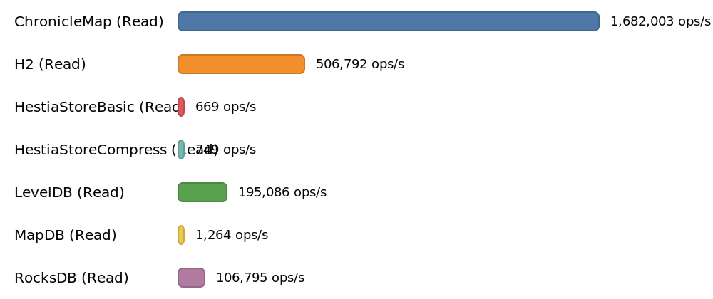

HestiaStore is a lightweight, embeddable key‑value storage engine optimized for billions of records, designed to run in a single directory with high performance and minimal configuration.
Features:
• Pure Java (no native dependencies), easy to embed
• 200k+ ops/s; predictable I/O with configurable buffering
• In‑memory or file‑backed storage, zero‑config setup
• Pluggable filters: Snappy compression, CRC32 integrity, magic-number validation
• Bloom filter for fast negative lookups (tunable false-positive rate)
• Segmented structure with sparse index for efficient range scans
• Custom key/value types via type descriptors
• Single‑writer, multi‑reader (optional synchronized mode)
• Test-friendly MemDirectory for fast, isolated tests
• Roadmap: write-ahead logging and advanced compaction
🚀 Performance Comparison
All tests ran on a 2024 Mac mini with 16 GB RAM. Absolute numbers vary between runs, so focus on relative differences.
Benchmark write throughput (ops/s, higher is better)
The following benchmark compares similar products by writing simple key-value pairs into a map. It includes a 3-minute warm-up to prime caches, followed by a 4-minute measurement period.

Detailed methodology and full benchmark artifacts are available at benchmark results.
Benchmark read throughput (ops/s, higher is better)
The read benchmark measures random lookups over the same pre-populated dataset produced by the write test. Each engine is opened on that data and a single client issues random reads of existing keys (no deletes). A 3-minute warm-up primes OS and engine caches, followed by a 4-minute measurement window.

Detailed methodology and full benchmark artifacts are available at benchmark results.
Benchmark sequential read throughput (ops/s, higher is better)
The sequential read benchmark scans the same pre‑populated dataset in key order using each engine’s iterator. Each engine is opened on that data and a single client performs a forward scan across all entries. A 3‑minute warm‑up primes OS and engine caches, followed by a 4‑minute measurement window.

Detailed methodology and full benchmark artifacts are available at benchmark results.
📊 Feature Comparison
Architecture & Concurrency
| Engine | Storage/Index | Concurrency | Background Work |
|---|---|---|---|
| HestiaStore | Segmented on-disk structure | Single-writer, multi-reader (optional synchronized) | Periodic segment flush/merge |
| RocksDB | LSM tree (leveled/uni) | Highly concurrent | Compaction + flush threads |
| LevelDB | LSM tree | Single-writer, multi-reader | Compaction |
| MapDB | B-tree/H-tree | Thread-safe (synchronized) | Periodic commits |
| ChronicleMap | Off-heap mmap hash map | Lock-free/low-lock | None (no compaction) |
| H2 | B-tree | Concurrent (MVCC) | Checkpoint/auto-vacuum |
Durability & Fit
| Engine | Durability | Compression | Runtime Deps | Typical Fit |
|---|---|---|---|---|
| HestiaStore | File-backed; commit on close | Snappy | Pure Java (JAR-only) | Embedded KV with simple ops, large datasets |
| RocksDB | WAL + checkpoints (optional transactions) | Snappy/Zstd/LZ4 | Native library | High write throughput, low-latency reads |
| LevelDB | File-backed; no transactions | Snappy | JAR-only port/native bindings | Lightweight LSM, smaller footprints |
| MapDB | File-backed; optional TX | None/limited | Pure Java (JAR-only) | Simple embedded maps/sets |
| ChronicleMap | Memory-mapped persistence; no ACID TX | None | Pure Java (JAR-only) | Ultra-low latency shared maps |
| H2 | WAL + MVCC transactions | Optional | Pure Java (JAR-only) | SQL + transactional workloads |
Notes
- “Concurrency” describes the general access model; specifics depend on configuration and workload.
- HestiaStore focuses on predictable file I/O with configurable buffering; WAL/transactions are on the roadmap.
🤝 Contributing
We welcome contributions! Please read our Contributing Guidelines before submitting a pull request.
📚 Documentation
- Index architecture
- Getting started with a quick start and examples
- Configuration — properties overview and guidance
- Logging — how to set up logging
- Releases — versioning and release process
📦 Installation and Basic Usage
To include HestiaStore in your Maven project, add the following dependency to your pom.xml:
<dependencies>
<dependency>
<groupId>org.hestiastore.index</groupId>
<artifactId>core</artifactId>
<version><!--latest verson--></version>
</dependency>
</dependencies>
Replace the version number with the latest available from Maven Central org.hestiastore.index:core.
Note: HestiaStore requires Java 17 or newer.
You can create a new index using the builder pattern as shown below:
// Create an in-memory file system abstraction
Directory directory = new MemDirectory();
// Prepare index configuration
IndexConfiguration<String, String> conf = IndexConfiguration
.<String, String>builder()//
.withKeyClass(String.class)//
.withValueClass(String.class)//
.withName("test_index") //
.build();
// Create a new index
SegmentIndex<String, String> index = SegmentIndex.<String, String>create(directory, conf);
// Perform basic operations
index.put("Hello", "World");
String value = index.get("Hello");
System.out.println("Value for 'Hello': " + value);
index.close();
For more integration details, see the Getting Started section.
🗺️ Roadmap
Planned improvements include:
- Full Multithreaded Storage Engine – Currently this is the biggest performance limitation. Disk I/O consumes only about 40% of available CPU, leaving significant unused capacity.
- Implement Asynchronous I/O – Explore alternative approaches for file system access. Replace the current java.io-based implementation.
- Example Application – Provide a simple, easy-to-run demo application that demonstrates HestiaStore’s capabilities. For detailed tasks and progress, see the GitHub Issues page.
❓ Need Help or Have Questions?
If you encounter a bug, have a feature request, or need help using HestiaStore, please create an issue.